Phase 2 Final Logbook Entry, 2026-07-27 by Nick Kapuka
Connected the Raspberry Pi supervisor, MariaDB database, CAN network, protected elevator controls, and rebuilt diagnostics page into one end-to-end Phase 2 system.
Connected the Raspberry Pi supervisor, MariaDB database, CAN network, protected elevator controls, and rebuilt diagnostics page into one end-to-end Phase 2 system.
Key details
Purpose: Consolidate and complete the website-to-database-to-CAN workflow for the Phase 2 project conclusion.
Components: C++, MariaDB, CAN logging, PHP, JavaScript, diagnostics, and Raspberry Pi deployment
Result: Completed the database connector, CAN logger, diagnostic tables, filters and pagination, operating-mode controls, and Pi deployment troubleshooting.
Team contribution: Nick Kapuka
Main task or topic
The main goal across July 24th to 27th was to finish connecting the Raspberry Pi supervisor controller, MariaDB database, CAN network, and protected website pages all together as part of the phase 2 conclusion. This required finishing the C++ database connector, adding raw CAN-message logging, rebuilding the diagnostics page, updating the PHP/JavaScript elevator controls, and fixing differences between the local Windows database and the database on the Raspberry Pi.
This entry also consolidates the work from the earlier parts of the same development thread because much of the code written during these few days depended directly on the C++, SQL, PHP, JavaScript, HTML, and CSS created beforehand.
Project architecture and intended data flow
The Raspberry Pi has two major roles:
It hosts the Apache/PHP website and MariaDB database.
It acts as the supervisor controller (SC) on the elevator CAN network.
The intended complete flow is:
flowchart TD
A["Website control button"] --> B["PHP validates request"]
B --> C["MariaDB elevator_requests"]
C --> D["Raspberry Pi C++ supervisor"]
D --> E["CAN request from SC"]
E --> F["Elevator Controller"]
F --> G["CAN position response"]
G --> D
D --> H["Update request and CAN logs"]
H --> I["Diagnostics page"]
The website does not talk directly to the CAN adapter. Website requests are written into MariaDB first. The C++ supervisor then reads the oldest pending remote request, sends the correct CAN message, waits for the elevator controller to confirm the new position, and marks the database request as completed.
Manual requests from the STM32 car/floor controllers follow the opposite direction. The Raspberry Pi receives the CAN frame, logs the raw frame, interprets the source, and creates a manual elevator-request entry when appropriate.
Earlier website and database work leading into this entry
Original visual elevator controller
The first version of elevator_control.php, elevator_control.js, and elevator_control.css was primarily a visual demonstration. The HTML contained:
Three floor rows and floor-station buttons.
Three car-controller buttons.
A visual elevator car inside the building shaft.
A current-floor display.
A last-command display.
The JavaScript waited for the HTML to load and then retrieved the main controls:
Admin approves a request and creates the matching users row.
Password is stored as a hash, not plain text.
The access request is marked approved.
The approved user logs in.
Session data permits access to members.php and the elevator controller.
Only user_role = admin can access request-management and diagnostics pages.
The approval form used prepared statements and a Post/Redirect/Get redirect after success. This prevented refreshing the result page from resubmitting the same approval.
Important earlier debugging points included:
A trailing comma can invalidate a CREATE TABLE.
A foreign-key column must be compatible with the referenced key.
username and email unique constraints reject duplicate accounts.
Calling $pdo->prepare() does not run SQL until execute() is called.
PHP session-key names must match exactly across files.
The string "false" is truthy in PHP/JavaScript unless it is deliberately converted; JSON booleans should remain real booleans.
Output such as usernames must be passed through htmlspecialchars().
Door state and movement interlock
The permanent door state is stored in the one-row elevator_state table instead of adding a new history row every time the doors move.
PHP accepts only:
$allowedDoorStates = ['open', 'closed'];
The submitted text is converted into the database's 0/1 value:
This web interlock is useful feedback, but the actual C++/CAN controller must also enforce the real hardware interlock.
MariaDB schema used by the combined system
Purpose of each main table
Table
Purpose
access_requests
Stores website-access application forms before approval
users
Stores approved accounts, password hashes, roles, and account state
elevator_requests
Stores remote/manual elevator requests and their progress
elevator_state
Stores the current permanent state in one row
can_message_log
Stores raw CAN traffic seen or sent by the supervisor
The major difference is that elevator_requests and can_message_log are historical logs, while elevator_state is a current-state table that is updated in place.
Final elevator_requests fields
Field
Use
elevator_request_id
Unsigned auto-increment primary key
request_type
remote or manual
requested_floor
Requested floor number
requested_by_user_id
Website user for remote requests; normally NULL for manual CAN calls
source_controller
Website controller name or physical controller name
request_status
Defaults to pending; later changed to accepted, completed, or failed
requested_at
Time request was inserted
accepted_at
Time the supervisor accepted it
completed_at
Time the requested move was confirmed
failure_reason
Optional diagnostic description
Final elevator_state design
The original idea used separate boolean columns such as doors_open and sabbath_enabled. This was replaced with:
Using one operation_mode column prevents the database from representing contradictory states such as Sabbath and maintenance both being enabled at the same time.
The table can be recreated with:
CREATE TABLE IF NOT EXISTS elevator_state (
state_id TINYINT UNSIGNED NOT NULL,
doors_open TINYINT(1) NOT NULL DEFAULT 0,
operation_mode VARCHAR(20) NOT NULL DEFAULT 'normal',
updated_at DATETIME NOT NULL
DEFAULT CURRENT_TIMESTAMP
ON UPDATE CURRENT_TIMESTAMP,
PRIMARY KEY (state_id)
);
INSERT INTO elevator_state (
state_id,
doors_open,
operation_mode
)
VALUES (
1,
0,
'normal'
);
Building the Raspberry Pi C++ / MariaDB connector
Why a dedicated database object was used
The supervisor program needed several database actions but should not open a brand-new MariaDB connection for every query. A DB class was therefore used to keep these private variables:
sql::Connection *con = nullptr;
int active_request_id = 0;
con stores the shared MySQL Connector/C++ connection (as seen in Michael's example code). active_request_id remembers which remote request was most recently read, allowing a later function to complete the same row after the elevator controller confirms arrival.
C++ cannot use a normal switch directly on a std::string, so enum values are switched and converted into strings:
std::string DB::map_operation_mode(
DB::OperationMode operationMode
) {
switch(operationMode) {
case OperationMode::NORMAL:
return std::string("normal");
case OperationMode::SABBATH:
return std::string("sabbath");
case OperationMode::MAINTENANCE:
return std::string("maintenance");
case OperationMode::FAULT:
return std::string("fault");
default:
std::cerr << "Invalid DB operation mode" << std::endl;
}
return std::string();
}
The UNKNOWN value is useful as a safe return state when a read fails, but it is deliberately rejected by set_operation_mode() so it cannot be written into MariaDB.
Reading the next pending remote request
read_floor_request() reads the oldest remote request in the queue:
executeUpdate() returns the number of affected rows. If the update succeeds, active_request_id is cleared so an unrelated later CAN message cannot be attached to an already-completed request.
Reading and writing the operation mode
The current mode is read with:
SELECT operation_mode
FROM elevator_state
WHERE state_id = 1
LIMIT 1;
Convert the operation-mode enum into database text
read_floor_request()
Read the oldest pending remote request
complete_elevator_request()
Mark the active request completed
log_can_message()
Store a raw CAN frame in can_message_log
get_operation_mode()
Read the current one-row mode
set_operation_mode()
Update the one-row mode
get_doors_open()
Read the current door state
set_doors_open()
Update the current door state
Manual elevator-request logger
A later C++ design also added/discussed:
int log_elevator_request(
int requestedFloor,
int sourceID
);
This function is for physical CAN button presses, so:
request_type is always manual.
requested_by_user_id is NULL.
source_controller is determined from the CAN ID.
0x200 maps to CC.
0x201 maps to F1.
0x202 maps to F2.
0x203 maps to F3.
Its return convention matches the CAN logger:
Return
Meaning
1
Row inserted
0
Invalid floor/source or nothing inserted
-1
Database/SQL failure
This kept invalid CAN input separate from an actual MariaDB failure.
Intended use from main.cpp
The database object is intended to be made once and reused:
DB db;
bool connected = db.db_connect();
DB::OperationMode mode = db.get_operation_mode();
int floorRequest = db.read_floor_request();
bool doorsClosed = db.set_doors_open(false);
A simplified remote-request sequence would be like:
int requestedFloor = db.read_floor_request();
if(requestedFloor >= 1 &&
requestedFloor <= 3) {
// convert floor into CAN command
// send command through PCAN as ID 0x100
// log the transmitted CAN frame
}
// after an EC position message confirms arrival:
db.complete_elevator_request();
Snippet of database.h for better visualization:
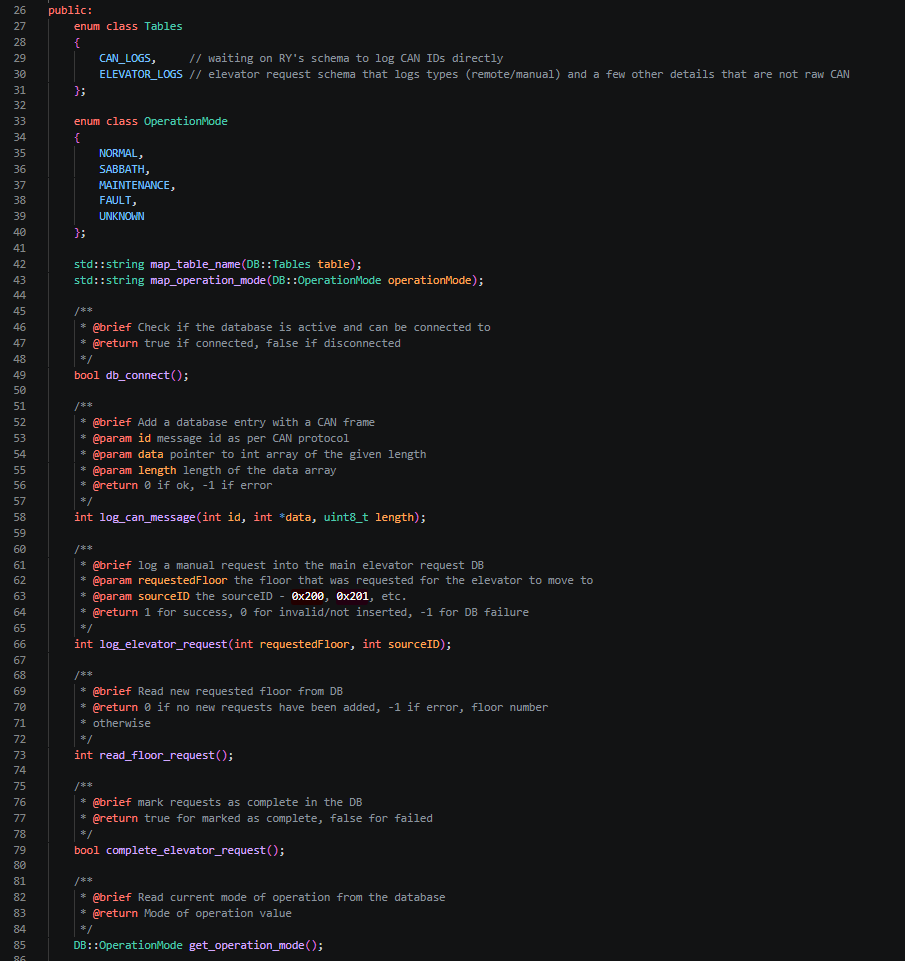
First portion of database.cpp
Database.cpp 1:
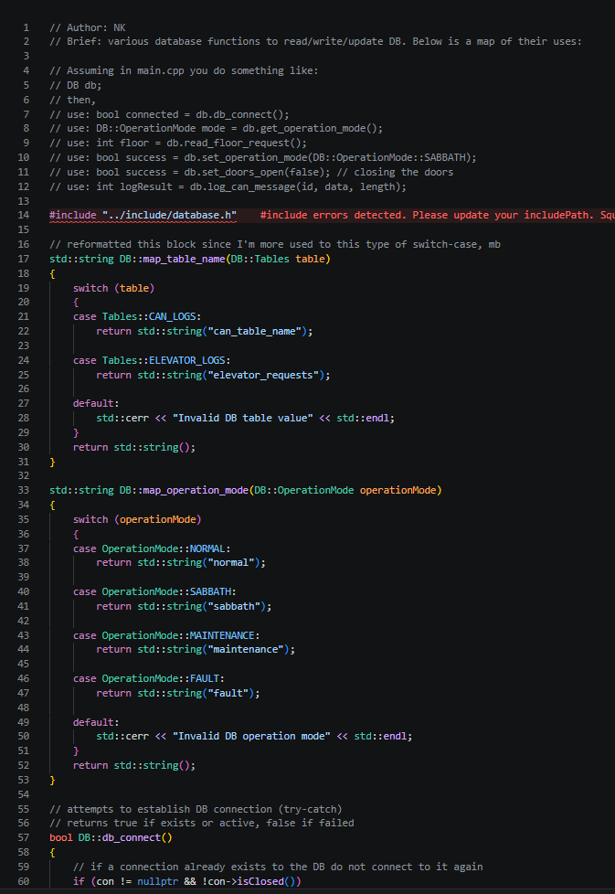
Second portion of database.cpp
Database.cpp 2:
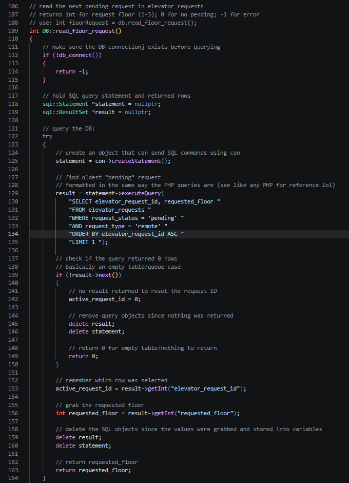
Third portion of database.cpp
CAN Logging
SQL table and progress update:
On the 26th I finally received the CAN message logging table made by RY. Initially, the table she provided was sent over Discord and poorly formatted:
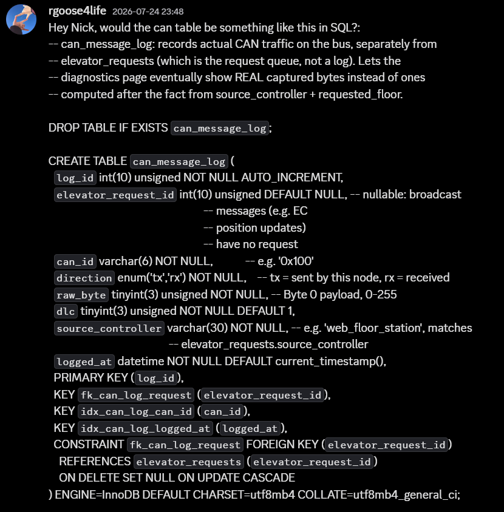
CAN-message table originally received over Discord
This table was alright, but I did ask for her to fix the formatting by either sending me the full file or using the backtick characters to format it as a Discord codeblock. Neither was provided...
However, the following morning she uploaded it to GitHub - perfect. I pulled from there and remade her table locally using:
CREATE TABLE lif_elevator.can_message_log (
log_id INT UNSIGNED NOT NULL AUTO_INCREMENT,
elevator_request_id INT UNSIGNED DEFAULT NULL,
can_id VARCHAR(6) NOT NULL,
direction ENUM('tx', 'rx') NOT NULL,
raw_byte TINYINT UNSIGNED NOT NULL,
dlc TINYINT UNSIGNED NOT NULL DEFAULT 1,
source_controller VARCHAR(30) NOT NULL,
logged_at DATETIME NOT NULL DEFAULT CURRENT_TIMESTAMP,
PRIMARY KEY (log_id),
INDEX idx_can_log_request (elevator_request_id),
INDEX idx_can_log_can_id (can_id),
INDEX idx_can_log_logged_at (logged_at),
CONSTRAINT fk_can_log_request
FOREIGN KEY (elevator_request_id)
REFERENCES lif_elevator.elevator_requests (elevator_request_id)
ON DELETE SET NULL
ON UPDATE CASCADE
) ENGINE=InnoDB
DEFAULT CHARSET=utf8mb4
COLLATE=utf8mb4_general_ci;
With the table finally made, I could begin making a CAN logging function in CPP and eventually move onto the diagnostics page for the website as I've heard from MR that RY communicated with him about dropping that task. MR told her to communicate and confirm with me, as I would be the person best suited to take over the task.
She did not formally communicate this with me, provided me no update regarding this on either Saturday the 26th, nor Sunday the 27th. As it is currently 1:03AM on Monday the 27th and with nothing new has been pushed to main, I'm assuming she did end up dropping this required task.
Since it is literally due less than 24 hours from now, I will be taking it over - my grade should not have to suffer from incomplete work by my group member and their lack of communication.
Diagnostic Page update:
RY claimed she did end up updating the PHP and after some time, she did eventually push her changes to main.
Few things to note right away.
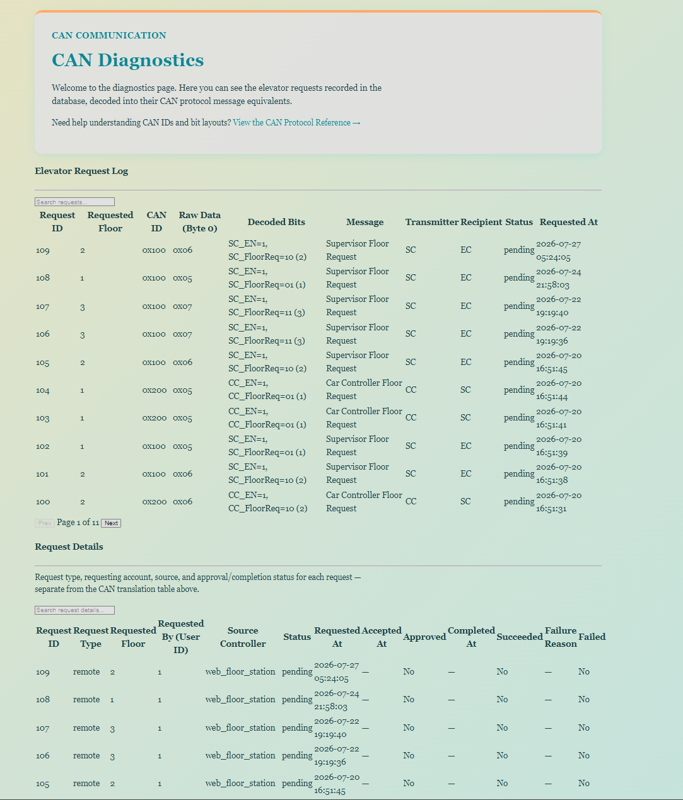
Initial diagnostics page received from a teammate
The page I received was quite messy and lacked CSS entirely. This was caused by her linking a non-existing CSS file.
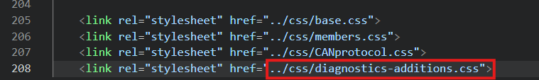
Broken CSS reference on the received diagnostics page
Removing the "additions" did not fix the problem either (as diagnostics.css did exist)
Additionally, I asked her to add "back to members" and "log out" buttons after providing her with the EXACT divs needed... She put them in the wrong place, causing this:
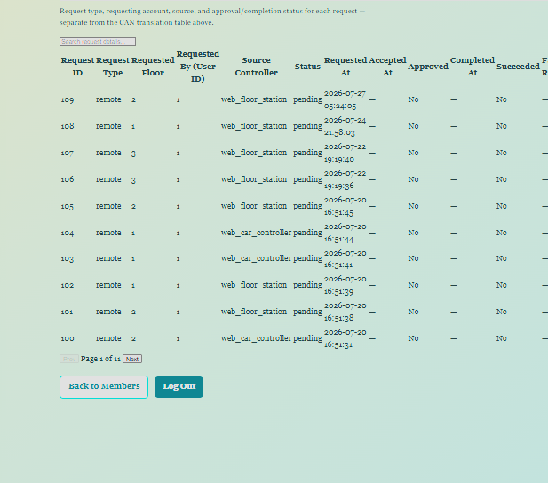
Back and logout buttons placed below the page content
Reference page showing the intended button placement
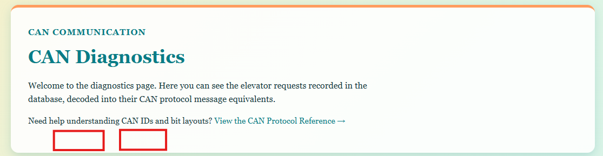
Message specifying the requested button placement
I don't think I could've made it much more obvious as she had 4 separate files that ALL have the exact same buttons + the code was provided in my message using:
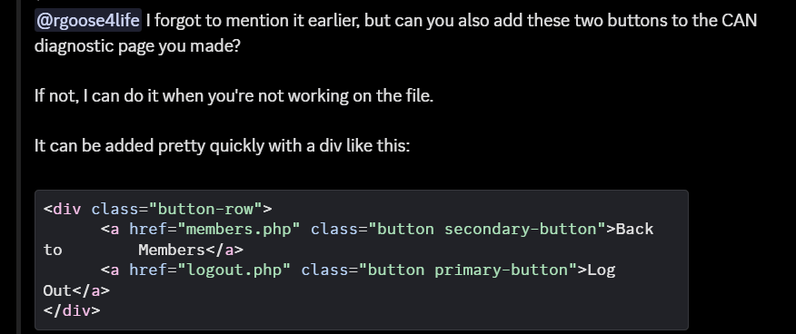
HTML button-row example provided as a reference
She also kept her massive CAN look-up table which both MR and I requested her to remove and replace with proper CAN logging, while keeping an elevator_requests table.
Her PHP essentially read values and translated them:
Which... Does not seem like "CAN" logging. She later did remake the table, and when confronted about if it used the new CAN_message_log table she made, she said it did.
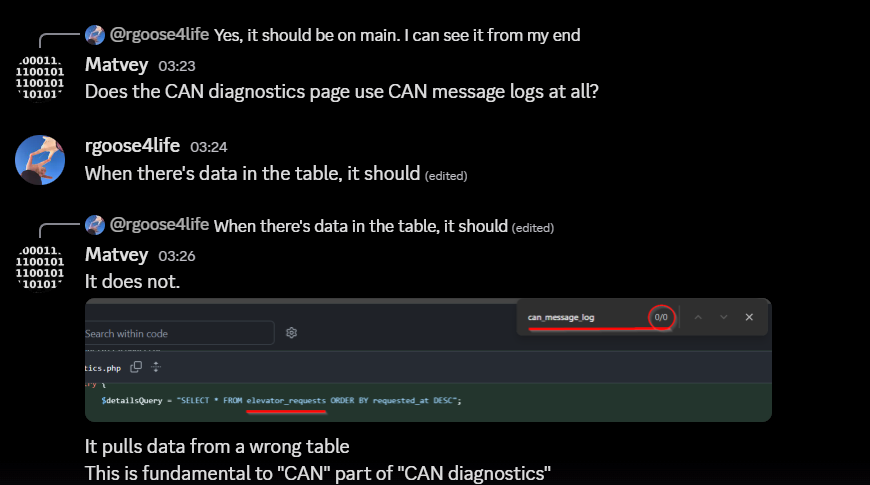
Received diagnostics page showing the incorrect CAN table
As seen here,
CAN-message table originally received over Discord
The table was explicitly called "can_message_log", and when using ctrl+F to search, that name does not popup in her file.
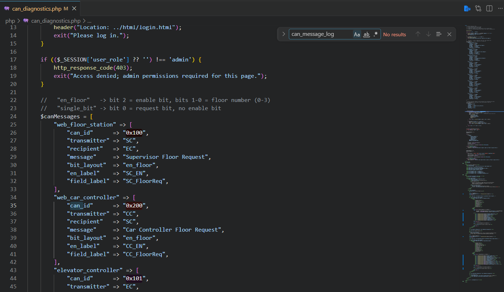
Search showing that can_message_log was not used
So... Her CAN logging didn't do much logging of CAN - lol.
When MR pointed it out, she recommended to add this statement:
$canLog = [];
$canLogError = '';
try {
$canLogQuery = "SELECT * FROM can_message_log ORDER BY logged_at DESC";
$canLogStatement = $pdo->prepare($canLogQuery);
$canLogStatement->execute();
$canLog = $canLogStatement->fetchAll(PDO::FETCH_ASSOC);
} catch (PDOException $e) {
error_log($e->getMessage());
$canLogError = "Could not load the CAN message log right now. Please try again shortly.";
}
Which, was of course not pasted in Discord code-block form (as I've asked...) but whatever.
This is a cool query - it does call that table and pulls everything... But it also does nothing without more code - it just fills an array.
Given that she did not provide anything except for this to go along with her "missing PHP"... I just took it over and remade the entire thing myself.
Fixing her bugs + understanding the JS (which she asked me to explain to her after she wrote it and claimed she does not fully understand it) would take too long. As it is almost 6AM on Monday July 27th, I will continue work on my original "elevator_diagnostics.php" file.
Speaking of that, I provided her with that file, told her which other php files to cross-reference if she got stuck... And instead she made her own file.
Something else to note about general code style is that it heavily lacks comments. I personally like to "over-comment" to ensure I can remember what the code does, plus it makes it easier for others to understand. Her code was under-commented with entire functions only receiving 1-2 words, or just strange comments like:
// Add a new entry here any time a new controller/message type is added.
But I won't judge.
Here is what I received from RY:
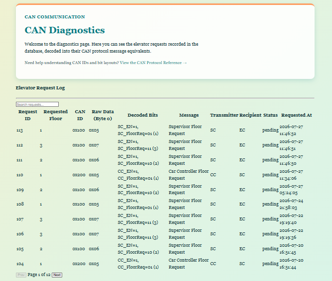
First portion of the received diagnostics implementation
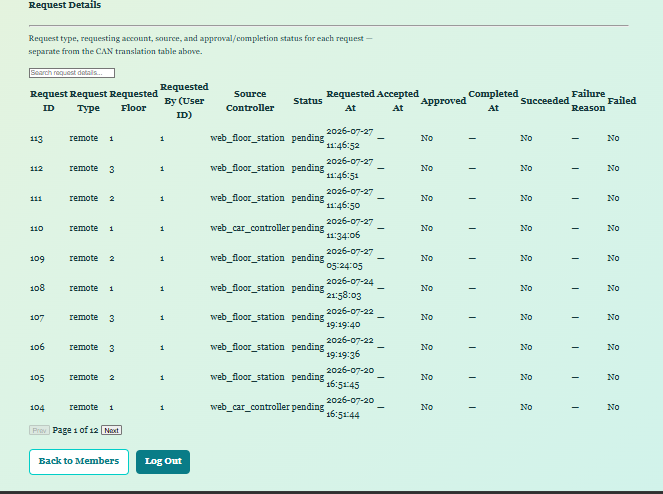
Second portion of the received diagnostics implementation
Rebuilding diagnostics page
I returned to my own elevator_diagnostics.php starting point and rebuilt the page in layers:
PHP session/admin protection.
PDO queries for both diagnostic tables.
HTML tables that print the returned arrays.
A new diagnostics-specific CSS file.
JavaScript search and filter functions.
Client-side pagination for both tables.
Protecting the page
The page starts the existing PHP session and loads the shared database connection:
This lets JavaScript retrieve only the rows in the intended table.
Fixing the shifted request columns
The source_controller value initially looked like it was printing under the wrong heading. The value was correct; the table header had an extra empty <th>:
<tr>
<th>
<th>Request ID</th>
That empty header shifted every visible heading one column to the right. Removing it fixed the alignment:
The tables grew quickly, especially can_message_log on the Pi, so pagination was added after the search/filter functions were working.
RY had a similar approach and I glanced at her code a couple times for reference, but her lack of comments and documentation made it difficult to fully understand the code. This led me to create my own and only use hers as reference.
The chosen page size was:
const ROWS_PER_PAGE = 15;
Each table received:
A Previous button.
A Page X of Y display.
A Next button.
A current-page variable.
The main pagination idea was to first build an array of only matching rows:
matchingRows.forEach(
function (row, index) {
if(index >= startIndex && index < endIndex) {
row.hidden = false;
}
}
);
Changing the search or status returns the table to page 1. Previous/Next buttons are disabled when the first/final page is reached.
The same structure was duplicated for CAN rows using the preferred uppercase names such as CANCurrentPage, CANPreviousPage, and updateCANTable().
This is client-side pagination: PHP still loads the current query result into the page, while JavaScript decides which 15 matching rows to display. A later improvement for a very large CAN log would be SQL/server-side pagination or at minimum:
ORDER BY log_id DESC
LIMIT 500;
Final small PHP/HTML cleanup
Lastly, I reviewed the code and formatted it to find: - A malformed closing <p> in the Access Status card. - A missing final </html> tag. - Session username/role values that should be escaped. - The incorrect $elevatorState = []; initialization. - The extra request-table <th> that shifted all headings.
After these corrections, the diagnostics page could: - Load both real MariaDB tables. - Show newest entries first. - Display NULL values cleanly. - Search any visible row text. - Filter requests by status. - Filter CAN messages by TX/RX direction. - Show colour-coded badges. - Paginate both filtered result sets. - Restrict access to administrator accounts.
Fixing old PHP issues
In between work, I fixed a PHP-DB issue. I had to change one of the entry types from int into a string with different values. The dedicated "sabbath_mode" column which would flip between 0 and 1 has been changed to "operation_modes" (as this works better with the CPP and prevents multiple modes running at once by having one control column).
But this will likely be changed as I plan to move this element later - which means recolouring it.
One more "mistake" I noticed is that I forgot to make the operation mode dynamic. If you enabled Sabbath mode, it would update, but if you refreshed the page it would revert back. The behaviour is:
Sabbath enable on website = Sabbath enable in DB refresh page Sabbath disabled on website = Sabbath enable in DB
This was because refreshing did not query the DB to pull the latest value from the DB.
First change:
$initialOperationMode = 'normal';
Default to normal until DB queried.
Second change:
// read from DB to load page with the data
$query = "
SELECT doors_open
FROM elevator_state
WHERE state_id = 1
LIMIT 1
";
updated to:
// read from DB to load page with the data
$query = "
SELECT doors_open, operation_mode
FROM elevator_state
WHERE state_id = 1
LIMIT 1
";
Read both values from the same table - might as well.
Next, add this line:
// maria DB returns 0 or 1 for door state, convert it into a PHP bool
if($elevatorState) {
$initialDoorsOpen = (int) $elevatorState['doors_open'] === 1;
$initialOperationMode = $elevatorState['operation_mode'];
}
// update the Sabbath toggle using the operation mode loaded by PHP
updateSabbathDisplay(initialOperationMode === "sabbath");
Addition of maintenance mode in elevator_control
Maintenance mode already existed as a valid database/C++ operation mode, but the website did not have a control for it.
Button placement and HTML
The maintenance control was placed directly below the Sabbath toggle in the right-hand controller column. These are both operating-mode controls, so grouping them together is clearer than placing maintenance beside a floor-request button or door control.
After changing the Pi's JavaScript, Ctrl + F5 was required once to ensure the browser did not continue running a cached copy.
The website now updates elevator_state.operation_mode; the C++ supervisor still needs to read and enforce the actual maintenance behaviour in the physical system.
Assisting MR with R-Pi DB-related work
Missing operation_mode column
MR received:
Failed to read operation_mode from DB
Unknown column 'operation_mode' in 'SELECT'
The catch block was correctly printing the error:
std::cerr << "Failed to read operation_mode from DB " << error.what() << std::endl;
The exception occurs while MariaDB executes the SELECT, before C++ can call:
result->getString("operation_mode");
The likely cause was that the Pi still contained the older elevator_state schema. The checks were:
USE lif_elevator;
SELECT DATABASE();
DESCRIBE elevator_state;
The missing column could be added with:
ALTER TABLE elevator_state
ADD COLUMN operation_mode
VARCHAR(20)
NOT NULL
DEFAULT 'normal'
AFTER doors_open;
but the Pi did not. The table and permanent row were recreated using the CREATE TABLE IF NOT EXISTS and INSERT statements recorded earlier in this note.
The final checks were:
DESCRIBE elevator_state;
SELECT *
FROM elevator_state;
Clearing test elevator requests
All 115 earlier requests were test data. The simplest command is normally:
TRUNCATE TABLE elevator_requests;
TRUNCATE removes every row and resets the next auto-increment ID to 1.
When LiF_Admin did not have ALTER permission, the data was cleared with:
DELETE FROM elevator_requests;
and the counter needed a privileged account:
ALTER TABLE elevator_requests
AUTO_INCREMENT = 1;
The root-login problem happened because:
mariadb -u root -h 127.0.0.1 -P 3306
was typed inside the MariaDB prompt. That is a Linux terminal command, not SQL.
The correct sequence on the Raspberry Pi is:
exit;
Then from the normal Pi shell:
sudo mariadb
Then:
USE lif_elevator;
ALTER TABLE elevator_requests
AUTO_INCREMENT = 1;
If MariaDB is waiting at its continuation prompt (->), the incomplete SQL can be cancelled with:
\c
PHP database connection refused
Another Pi produced:
SQLSTATE[HY000] [2002]
No connection could be made because
the target machine actively refused it
localhost can cause PHP to use a Linux socket or resolve differently, while 127.0.0.1:3306 explicitly requests local TCP.
Ultimately, the issue was just an IP misstype when entering it into the search bar to access the Pi remotely - lol.
LiF_Admin permissions
An earlier SHOW GRANTS result contained only:
GRANT USAGE ON *.*
TO 'LiF_Admin'@'localhost'
USAGE does not grant permission to use the project database. The database user required suitable privileges on:
lif_elevator.*
for the website/C++ operations it performs. Schema-changing commands such as ALTER TABLE can remain root-only if desired, but normal runtime commands require at least the relevant SELECT, INSERT, and UPDATE privileges.
Setting up SQL/C++ Connector on Windows to test C++ code
The Raspberry Pi is the actual build target because it already has the professor-provided PCAN and MySQL Connector/C++ libraries. I still configured Windows/VS Code enough to edit and syntax-check normal C++.
Fixing the missing Windows compiler
At first, VS Code could not find g++, and IntelliSense suggestions such as <string> were not working correctly. MSYS2 was installed and the UCRT64 compiler package was added:
pacman -S mingw-w64-ucrt-x86_64-gcc
After restarting VS Code, the UCRT64 g++ installation could be selected as the compiler.
UCRT64 refers to the MinGW-w64 toolchain that uses Microsoft's Universal C Runtime. This is a normal 64-bit Windows compiler environment.
The STM32Cube/clangd extensions also interfered with normal desktop C++ IntelliSense. The project needed the correct compiler/toolchain selected rather than treating this MariaDB program like STM32 firmware.
Why the full connector was not compiled on Windows
Installing g++ does not install MySQL Connector/C++. The project libraries supplied by the professor were intended for the Raspberry Pi's ARM/Linux environment, so the Windows editor could understand ordinary C++ but could not fully link the Pi program without a separate Windows Connector/C++ installation.
This meant the practical approach was:
Edit and inspect code on Windows.
Push/pull it through Git.
Compile and test the full program on the Raspberry Pi.
An earlier warning about unused id, data, and length parameters came from the placeholder log_can_message() body. Those warnings disappeared once the real logger used the parameters.
Example connector test
The class was designed to be tested independently from the full CAN loop:
DB db;
if(!db.db_connect()) {
return 1;
}
int floor = db.read_floor_request();
std::cout << "Requested floor: " << floor << std::endl;
DB::OperationMode mode = db.get_operation_mode();
int doorsOpen = db.get_doors_open();
Testing each database function separately made it easier to distinguish:
A compiler/linker problem.
A MariaDB connection/permission problem.
A missing table/column problem.
A logic problem in the full elevator supervisor.
Final CAN logging implementation
The existing CAN Logging section above records how the table was received and why the diagnostics implementation had to be taken over. This section records the completed C++ function in a more direct technical form.
Input validation and return meanings
The signature remained:
int DB::log_can_message(
int id,
int *data,
uint8_t length
);
It was deliberately kept as an int because the supervisor needed to distinguish three outcomes:
Return
Meaning
1
Exactly one CAN-log row was inserted
0
Invalid input, unknown CAN ID, or no row inserted
-1
Database connection/SQL failure
The first validation prevents a null pointer, a zero-length frame, or a CAN DLC over 8:
if(
data == nullptr ||
length == 0 ||
length > 8
) {
std::cerr << "CAN message was not logged: " << "invalid data or length" << std::endl;
return 0;
}
The table stores raw_byte as TINYINT UNSIGNED, so:
if(data[0] < 0 || data[0] > 255) {
std::cerr << "CAN message was not logged: " << "data[0] is outside 0-255" << std::endl;
return 0;
}
Inferring direction and source
The caller does not pass text such as rx, tx, or F2. The function determines those values from the ID so inconsistent labels cannot be supplied:
NULLIF(?, 0) is important. active_request_id is zero when a CAN frame is not connected to an active remote website request. MariaDB converts that zero to SQL NULL, which satisfies the nullable foreign key.
On a SQL exception, the statement is deleted if it was created, the MariaDB message is printed, and the function returns -1.
Raspberry Pi deployment and verification notes
Website access from another computer
Because Apache hosts the site on the Pi, a laptop on the same network can open the Pi's IP address in a browser:
http://<raspberry-pi-ip>/
Using these useful Pi IP checks:
hostname -I
and:
ip addr
We found the Pi's IP was:
192.168.1.115
Program/repository location
The supervisor project was deployed under:
/var/www/html/SENG73000_W2/RPi/LiF_SC
The Raspberry Pi was configured so the supervisor programs could start on power-on, allowing the website/server and CAN supervisor to operate as one embedded system.
End-to-end behaviour after these changes
Remote website request
Logged-in user presses a floor/car button.
JavaScript sends requested_floor and source_controller.
PHP validates the values and current user.
PHP reads doors_open.
PHP inserts a remote row into elevator_requests.
JavaScript displays the returned request ID.
C++ reads the oldest pending remote request.
C++ transmits 0x100 with the floor command.
The transmitted frame is inserted into can_message_log.
EC reports its new position using 0x101.
The received frame is logged.
Once the position matches, C++ completes the active request.
The diagnostics page displays the completed request and its related CAN traffic.
Manual physical request
A car/floor STM32 sends a CAN request.
The Pi receives the frame.
log_can_message() stores the raw message.
The source ID is mapped to CC, F1, F2, or F3.
The interpreted call is inserted as a manual elevator request.
The supervisor coordinates the command with the elevator controller.
State controls
Door, Sabbath, or Maintenance button sends a separate AJAX action.
PHP validates the submitted text.
PHP updates row state_id = 1.
PHP returns the resulting value as JSON.
JavaScript immediately updates the page.
Refreshing re-reads the same values from MariaDB.
C++ can read the same state before deciding whether/how to move.
Results and notable lessons
The database is the boundary between the web interface and the hardware supervisor.
elevator_requests is a work/history queue, while elevator_state stores the latest permanent state.
A shared C++ connection avoids repeatedly reconnecting to MariaDB.
Prepared statements are required whenever values are inserted or updated.
result->next() is the guard that distinguishes a returned row from an empty query.
active_request_id connects the remote request, transmitted CAN frame, received position, and final completion update.
NULLIF(active_request_id, 0) allows unrelated/manual CAN traffic to be logged without violating the foreign key.
One operation_mode string prevents multiple mutually exclusive modes from being enabled simultaneously.
AJAX has two distinct success levels: the HTTP request can succeed while PHP/SQL returns success: false.
PHP page-load values and JavaScript click-response values must both be implemented; otherwise a control may only look correct after refreshing.
HTML table headings and body cells must contain the same number of columns.
JavaScript identifiers are case-sensitive, including preferred names containing uppercase CAN.
Client-side filtering should occur before pagination so every filtered page remains full and page counts stay correct.
Linux shell commands cannot be entered at the MariaDB [...]> prompt.
Linux MariaDB table-name capitalization may differ from the Windows development environment.
The Pi remains the correct final compilation environment for code that links against ARM PCAN and MySQL Connector/C++ libraries.